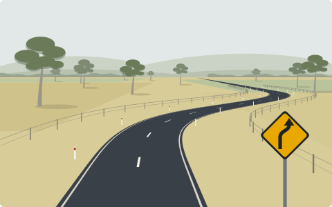

Behind Victoria’s road toll
Who is hurt on our roads, where the risk is highest, and how much speed matters, 2012–2024

In 2024, 284 people died on Victoria’s roads, more than five every week. Thousands more were seriously injured.
Each square is one person killed, grouped by how they were travelling. Drag the slider to compare any year since 2012.
The toll is not falling
Victoria lost 211 people in 2020, when lockdowns kept cars off the road. By 2023 the toll had climbed back to 295, the highest since this dataset begins in 2012.
Regional Victoria is home to about one in four Victorians, yet it accounts for more than half of all road deaths.
People killed each year, by where the crash happened
Without a steel shell, a crash is far more serious
Drivers make up two thirds of everyone caught up in injury crashes, and about half of them walk away unhurt.
For people outside a car the outcome is very different: 46% of motorcyclists and 42% of pedestrians involved in a crash were killed or seriously injured.
A serious injury generally means the person was admitted to hospital.
What happened to everyone involved in an injury crash, 2020–2024
The risk is highest in the regions
Measured against the number of people who live there, serious crashes are most common in rural shires crossed by busy highways and tourist routes, such as Murrindindi, Towong and Strathbogie. Per resident, a fatal crash is about three and a half times as likely in Regional Victoria as in Melbourne.
Fatal and serious-injury crashes per 100,000 residents a year, 2020–2024
Metropolitan Melbourne, enlarged
Crashes are counted where they happen, not where the people involved live, so the City of Melbourne, with many visitors and few residents, ranks high. Hover over a council for details.
Where the most serious crashes happen: fatal and serious-injury crashes, 2020–2024
Metropolitan Melbourne, enlarged
In raw numbers the picture flips: most crashes happen where most people live, in Greater Geelong and Melbourne’s growing outer suburbs. Circles are the same scale in both maps. Click the legend to show one area.
Speed decides how bad a crash is
On roads signed 100 km/h, about 1 in 20 injury crashes kills someone. On 60 km/h suburban roads it is about 1 in 89. Higher limits are mostly on rural roads: two in three fatal crashes in Regional Victoria were on roads signed 100 or 110 km/h, compared with one in ten in Melbourne.